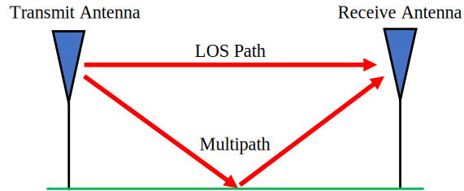
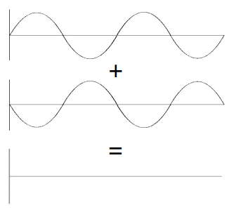
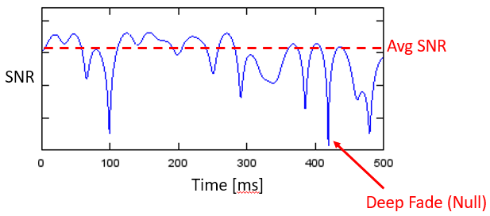
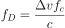
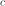
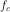

12. Evanouissement par Multi-Trajets¶
Dans ce chapitre, nous présentons les trajets multiples, un phénomène de propagation qui fait que les signaux atteignent le récepteur par deux chemins ou plus, ce qui est le cas dans les systèmes sans fil du monde réel. Jusqu’à présent, nous n’avons abordé que le “canal AWGN”, c’est-à-dire un modèle de canal sans fil où le signal est simplement ajouté au bruit, qui ne s’applique réellement qu’aux signaux transmis par câble et à certains systèmes de communication par satellite.
Multi-Trajets¶
Tous les canaux sans fil réalistes comportent de nombreux “réflecteurs”, étant donné que les signaux RF rebondissent. Tout objet situé entre ou près de l’émetteur (Tx) ou du récepteur (Rx) peut créer des chemins supplémentaires que le signal emprunte. Chaque chemin subit un déphasage (retard) et une atténuation (réduction d’amplitude) différents. Au niveau du récepteur, tous les chemins s’additionnent. Ils peuvent s’additionner de manière constructive, destructive ou un mélange des deux. Nous appelons ce concept de trajets multiples du signal “multi-trajets”. Il y a le chemin en visibilité directe (LOS pour line of sight en anglais), puis tous les autres chemins. Dans l’exemple ci-dessous, nous montrons le chemin LOS et un seul chemin non-LOS :
Des interférences destructrices peuvent se produire si vous n’avez pas de chance avec la façon dont les chemins s’additionnent. Prenons l’exemple ci-dessus avec seulement deux trajets. Selon la fréquence et la distance exacte des trajets, les deux trajets peuvent être reçus avec un déphasage de 180 degrés et à peu près la même amplitude, ce qui les annule l’un par rapport à l’autre (voir ci-dessous). Vous avez peut-être appris l’interférence constructive et destructive en cours de physique. Dans les systèmes sans fil, lorsque les trajets se combinent de manière destructrice, nous appelons cette interférence “évanouissement profond” car notre signal disparaît brièvement.
Les trajets peuvent également s’additionner de manière constructive, entraînant la réception d’un signal fort. Chaque chemin a un déphasage et une amplitude différents, que nous pouvons visualiser sur un graphique dans le domaine temporel appelé “profil de retard de puissance”:

Le premier chemin, le plus proche de l’axe des y, sera toujours le chemin LOS (en supposant qu’il y en ait un) car aucun autre chemin ne peut atteindre le récepteur plus rapidement que le chemin LOS. En général, l’amplitude diminue lorsque le délai augmente, car un chemin qui a mis plus de temps à arriver au récepteur aura voyagé plus loin.
Evanouissement¶
Ce qui a tendance à se produire, c’est un mélange d’interférences constructives et destructives, et cela change au fil du temps lorsque la Rx, la Tx ou l’environnement se déplace/change. Nous utilisons le terme “evanouissement” pour désigner les effets d’un canal à trajets multiples changeant au fil du temps. C’est pourquoi nous parlons souvent d‘“évanouissement par multi-trajets”; il s’agit en fait de la combinaison d’une interférence constructive/destructrice et d’un environnement changeant. Le résultat est un rapport signal/bruit qui varie dans le temps; les changements sont généralement de l’ordre de la milliseconde à la microseconde, selon la vitesse de déplacement de la Tx/Rx. Vous trouverez ci-dessous un graphique du rapport signal/bruit en fonction du temps en millisecondes qui illustre l’évanouissement par multi-trajets.
{kind=link}
Il existe deux types d’évanouissement du point de vue du domaine temporel :
- Évanouissement lent: Le canal ne change pas pendant la durée d’un paquet de données. C’est-à-dire qu’un zéro pendant un évanouissement lent effacera tout le paquet.
- L’évanouissement rapide: le canal change très rapidement par rapport à la longueur d’un paquet. La correction d’erreur, combinée à l’entrelacement, peut combattre l’évanouissement rapide.
Il existe également deux types d’évanouissement du point de vue du domaine fréquentiel :
Evanouissement sélectif en fréquence : L’interférence constructive/destructive change dans la gamme de fréquences du signal. Lorsque nous avons un signal à large bande, nous couvrons une large gamme de fréquences. Rappelez-vous que la longueur d’onde détermine si elle est constructive ou destructive. Si notre signal couvre une large gamme de fréquences, il couvre également une large gamme de longueurs d’onde (puisque la longueur d’onde est l’inverse de la fréquence). Par conséquent, nous pouvons obtenir différentes qualités de canal dans différentes parties de notre signal (dans le domaine fréquentiel). D’où le nom d’évanouissement sélectif en fréquence.
Evanouissement plat : se produit lorsque la largeur de bande du signal est suffisamment étroite pour que toutes les fréquences subissent à peu près le même effet du canal. S’il y a un évanouissement profond, l’ensemble du signal disparaît (pendant la durée de l’évanouissement).
Dans la figure ci-dessous, la forme rouge montre notre signal dans le domaine fréquentiel, et la ligne courbe noire montre l’état actuel du canal sur la fréquence. Comme le signal le plus étroit connaît les mêmes effets de canal sur l’ensemble du signal, il subit un évanouissement plat. Le signal plus large subit un évanouissement sélectif en fréquence.

Voici un exemple d’un signal de 16 MHz de large qui émet en continu. Il y a plusieurs moments au milieu où il manque une partie du signal. Cet exemple illustre l’évanouissement sélectif en fréquence, qui provoque des trous dans le signal qui effacent certaines fréquences mais pas d’autres.

Simulation de l’évanouissement de Rayleigh¶
L’évanouissement de Rayleigh est utilisé pour modéliser l’évanouissement dans le temps, lorsqu’il n’y a pas de trajet LOS significatif. Lorsqu’il y a un chemin LOS dominant, le modèle d’évanouissement de Rice devient plus approprié, mais nous nous concentrerons sur Rayleigh. Notez que les modèles de Rayleigh et de Rice ne tiennent pas compte de l’évanouissement sur le trajet principal entre l’émetteur et le récepteur (telle que l’atténuation sur le trajet calculée dans le cadre d’un bilan de liaison), ni de l’ombrage (shadowing en anglais) causé par de grands objets. Leur rôle est de modéliser l’évanouissement par trajets multiples qui se produit au fil du temps, en raison du mouvement et des diffuseurs (scatterers en anglais) dans l’environnement.
De nombreuses théories sont issues du modèle d’évanouissement de Rayleigh, telles que des expressions pour le durée moyenne du dépassement de l’envelope du signal d’un certain seuil et la durée moyenne d’évanouissement. Mais le modèle d’évanouissement de Rayleigh ne nous dit pas directement comment simuler un canal à l’aide de ce modèle. Pour générer des évanouissements de Rayleigh en simulation, nous devons utiliser l’une des nombreuses méthodes publiées. Dans l’exemple Python suivant, nous utiliserons la méthode “somme-de-sinusoides” de Clarke.
Pour générer un canal d’évanouissement de Rayleigh en Python, nous devons d’abord spécifier le décalage Doppler maximum, en Hz, qui est basé sur la vitesse de déplacement de l’émetteur et/ou du récepteur, noté :math:\Delta v. Lorsque la vitesse est faible par rapport à la vitesse de la lumière, ce qui sera toujours le cas dans les communications sans fil, le décalage Doppler peut être calculé comme suit:

où  est la vitesse de la lumière, environ 3e8 m/s, et  est la fréquence porteuse sur laquelle la transmission est effectuée.
Nous choisissons également le nombre de sinusoïdes à simuler, et il n’y a pas de bonne réponse car elle est basée sur le nombre de diffuseurs dans l’environnement, que nous ne connaissons jamais réellement. Dans le cadre des calculs, nous supposons que la phase du signal reçu de chaque chemin est uniformément aléatoire entre 0 et  . Le code suivant simule un canal à évanouissement de Rayleigh en utilisant la méthode de Clarke :
. Le code suivant simule un canal à évanouissement de Rayleigh en utilisant la méthode de Clarke :
import numpy as np
import matplotlib.pyplot as plt
# Paramètres de simulation, n'hésitez pas à les modifier.
v_mph = 60 # la vitesse de TX ou RX, en miles par heure
center_freq = 200e6 # Fréquence de la porteuse RF en Hz
Fs = 1e5 # fréquence d'échantillonnage de la simulation
N = 100 # nombre de sinusoïdes à additionner
v = v_mph * 0.44704 # convertir en m/s
fd = v*center_freq/3e8 # max du décallage Doppler
print("max Doppler shift:", fd)
t = np.arange(0, 1, 1/Fs) # verteur de temps. (début, fin, pas)
x = np.zeros(len(t))
y = np.zeros(len(t))
for i in range(N):
alpha = (np.random.rand() - 0.5) * 2 * np.pi
phi = (np.random.rand() - 0.5) * 2 * np.pi
x = x + np.random.randn() * np.cos(2 * np.pi * fd * t * np.cos(alpha) + phi)
y = y + np.random.randn() * np.sin(2 * np.pi * fd * t * np.cos(alpha) + phi)
# z est le coefficient complexe représentant le canal, vous pouvez penser à cela comme un déphasage et attenuation d'amplitude
z = (1/np.sqrt(N)) * (x + 1j*y) # c'est ce que vous utiliserez réellement lorsque vous simulerez le canal
z_mag = np.abs(z) # prendre la magnitude pour les besoins de la figure
z_mag_dB = 10*np.log10(z_mag) # convertir en dB
# Plot fading over time
plt.plot(t, z_mag_dB)
plt.plot([0, 1], [0, 0], ':r') # 0 dB
plt.legend(['Evanouissement de Rayleigh', 'Pas d évanouissement'])
plt.axis([0, 1, -15, 5])
plt.show()
Si vous avez l’intention d’utiliser ce modèle de canal dans le cadre d’une simulation plus large, il vous suffit de multiplier le signal reçu par le nombre complexe z, représentant l’évanouissement plat. La valeur z est alors mise à jour à chaque pas de temps. Cela signifie que toutes les composantes de fréquence du signal sont soumises au même canal à un moment donné. Vous ne simulez donc pas un évanouissement sélectif en fréquence, qui nécessite une réponse impulsionnelle du canal à plusieurs taps, que nous n’aborderons pas dans ce chapitre. Si nous regardons l’amplitude de z, nous pouvons voir l’évanouissement de Rayleigh dans le temps :

Observez les évanouissements profonds qui se produisent brièvement, ainsi que la petite fraction de temps où le canal est de meilleur qualité que s’il n’y avait pas d’évanouissement du tout.
Atténuation de l’Evanouissement Multi-Trajets¶
Dans les communications modernes, nous avons développé des moyens de lutter contre les évanouissements par trajets multiples.
CDMA¶
La 3G utilise une technologie appelée accès multiple par répartition de code (CDMA). Avec la CDMA, vous prenez un signal à bande étroite et vous l’étalez sur une large bande passante avant de le transmettre (en utilisant une technique d’étalement du spectre appelée DSSS). Dans le cas d’un évanouissement sélectif en fréquence, il est peu probable que toutes les fréquences se trouvent dans un évanouissement profond au même moment. Au niveau du récepteur, l’étalement est inversé, et ce processus de désétalement atténue grandement l’effet de l’évanouissement profonde.

OFDM¶
La 4G, le WiFi et de nombreuses autres technologies utilisent un schéma appelé multiplexage par répartition orthogonale de la fréquence (OFDM). L’OFDM utilise ce que l’on appelle des sous-porteuses, qui divisent le signal dans le domaine des fréquences en un ensemble de signaux étroits et rapprochés. Pour lutter contre les évanouissements par trajets multiples, nous pouvons éviter d’assigner des données aux sous-porteuses qui sont dans un évanouissement profond, bien que cela nécessite que le récépteur renvoie les informations du canal à l’émetteur assez rapidement. Nous pouvons également affecter des schémas de modulation d’ordre élevé aux sous-porteuses dont le canal est de bonne qualité afin de maximiser notre débit de données global.